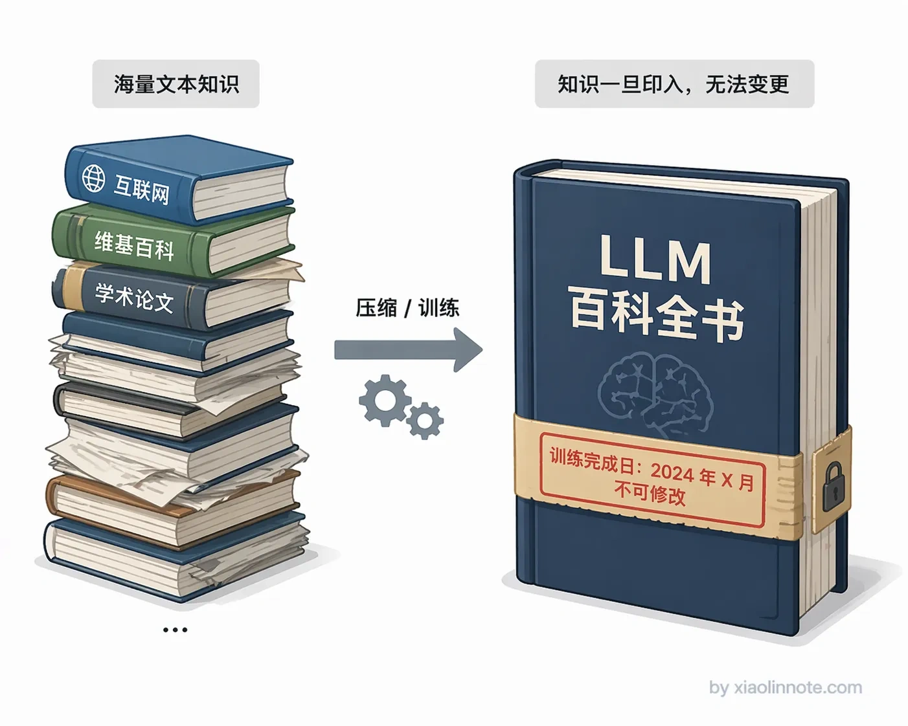
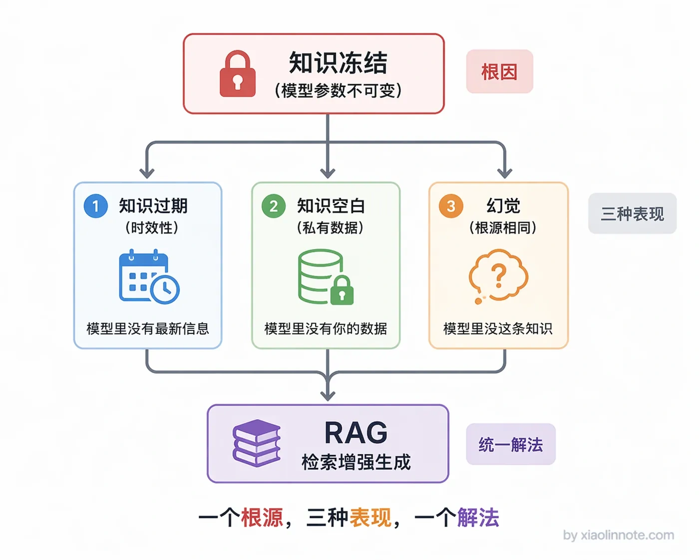
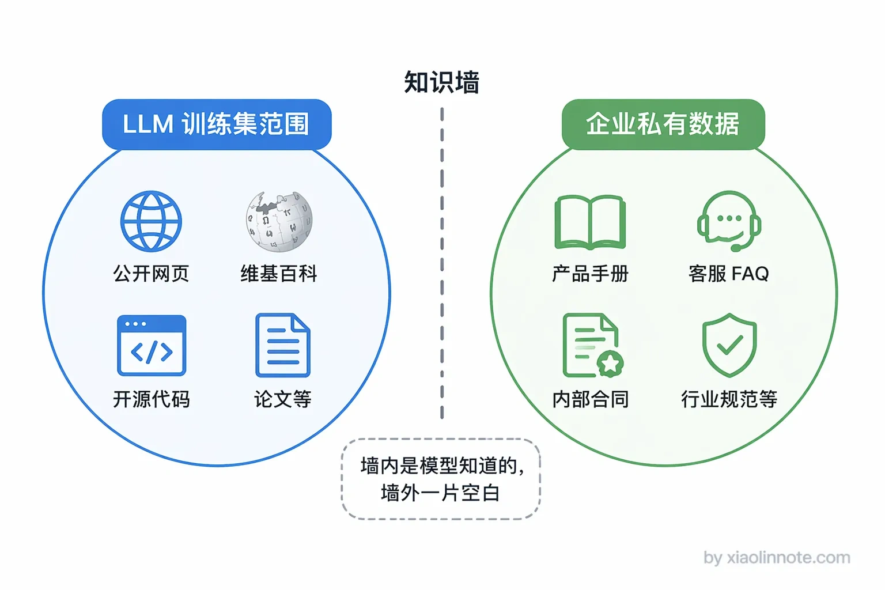
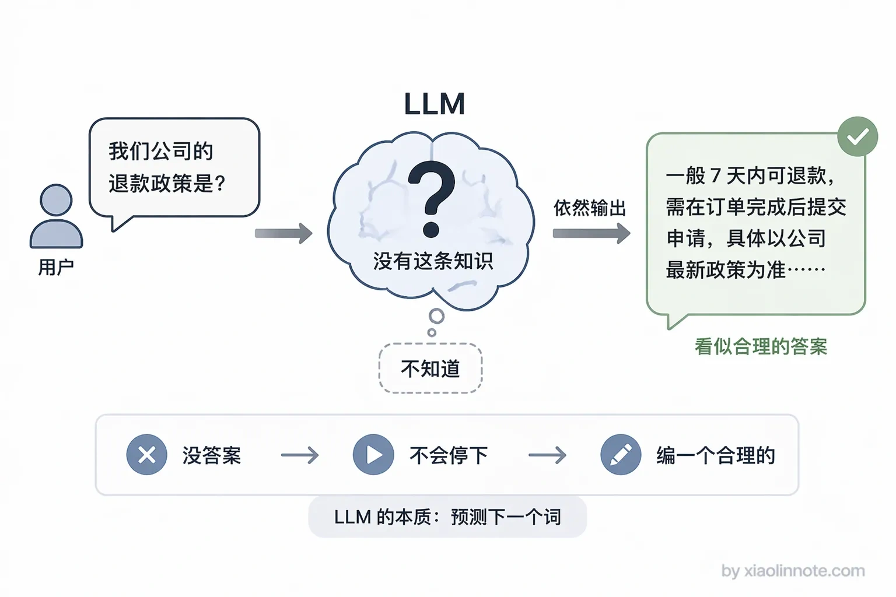
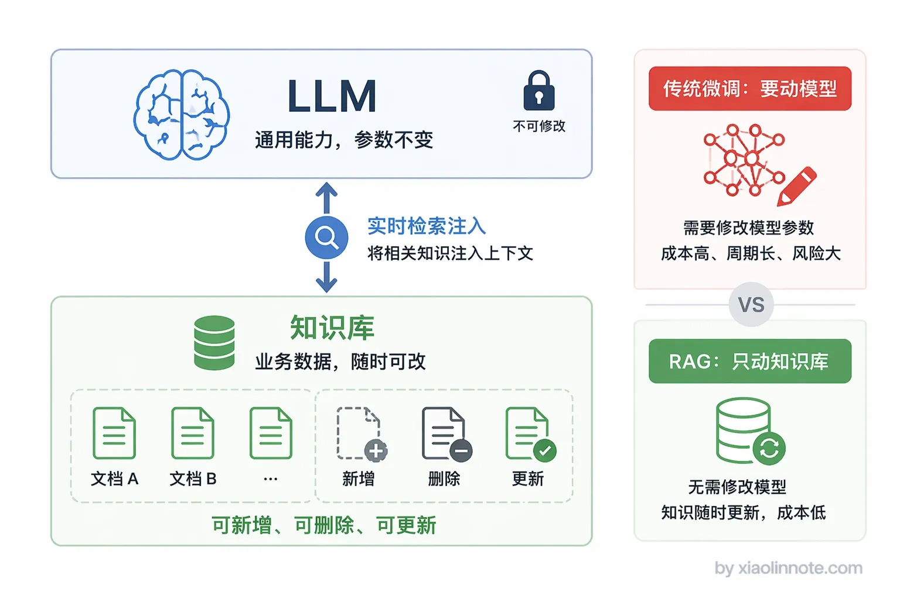

大模型的 RAG 主要用来解决什么问题？
👔面试官：你说你做过 RAG 项目，那 RAG 主要用来解决什么问题？
🙋♂️我：RAG 就是让大模型变得更聪明，回答质量更高。
👔面试官：哪个大模型不够聪明？你这不是在说废话吗？我问的是 RAG 解决的具体问题是什么，你连问题都没说清楚怎么谈方案？
🙋♂️我：哦，就是大模型有时候会编答案，RAG 可以让它不编。
👔面试官：幻觉只是其中之一。知识时效性呢？私有知识覆盖呢？这两个你都没提到。而且你以为 RAG 是专门解决幻觉的？幻觉只是知识缺失的副产品，根源是模型的知识冻住了，你得从根源上讲。
🙋♂️我：呃，知识冻住了是指训练数据过期了吧，那私有数据呢？
👔面试官：你连问题都说不全，怎么做的 RAG？回去想清楚再来吧。
好吧，这道题看似简单，但真被问到的时候很多人只记得「幻觉」两个字，其实 RAG 解决的是一整类问题。下面我来梳理清楚。
💡 简要回答
RAG 主要解决三个问题。
第一是知识时效性，LLM 训练完知识就固定了，训练截止日期之后发生的事它一无所知；第二是私有知识覆盖，公司内部文档、行业专有数据根本没有机会进训练集，LLM 对这些内容是空白的；第三是幻觉问题，没有知识依据时 LLM 容易「自己发挥」编出一个听起来合理但实际错误的答案，给了它参考资料之后幻觉就少很多。
这三个问题的根源都是同一件事，知识被固化在了模型参数里。RAG 的解法是把知识存到外部，用的时候实时检索注入，彻底绕开了参数里的知识限制。
📝 详细解析
LLM 的「知识冻结」问题
要理解 RAG 解决了什么问题，得先搞清楚一件事：LLM 的知识到底是怎么来的？它为什么会有「不知道」的时候？
LLM 在预训练阶段，通过阅读海量的文本，把这些文本里包含的知识逐渐「编码」到模型的参数权重里。你可以把它想象成一本写死了内容的百科全书，书里的知识丰富，但一旦印刷完成就没法再改内容了。

那这本「百科全书」有没有截止日期呢？当然有。训练数据收集到什么时候，模型就只知道那个时间点之前的事情。训练完成之后，不管外部世界发生了什么，模型的参数都不会自动更新，这就是「知识冻结」。
你可能会想，那就重新训练一遍呗？理论上可以，但训练一次 GPT 级别的模型，成本是千万美元级别的，你不可能每周都来一遍。那微调呢？微调确实能注入一些新知识，但成本也不低，而且微调出来的知识没法溯源，你不知道模型是从哪条知识推出来的答案，出错了也找不到原因。
所以「知识冻结」不是一个可以靠重新训练轻易解决的问题，它是 LLM 架构的固有特性。这个特性直接导致了三个问题，而且这三个问题是一环扣一环的。

知识过期：训练数据有截止日期
第一个问题最直观，就是知识过期了。你问 LLM「今年发布的某款产品有哪些新功能」，如果它的训练数据截止在发布日期之前，它不知道，但它不会说「我不知道」，而是会用自己见过的历史规律，「推测」出一个听起来合理的答案。这个答案可能是错的，但它说得很自信。
换一个更有实际影响的例子：金融场景里用 LLM 来辅助分析，如果模型不知道某公司最近一季度的财报数据，它给出的分析就是基于过期信息的，参考价值大打折扣。这类问题在 LLM 刚发布时不那么明显，但随着时间推移，训练数据越来越陈旧，时效性问题会越来越严重。
但时效性只是一个维度，还有一类知识是「从一开始就没进过训练集」的。
知识空白：私有数据根本没进过训练集
这就引出了第二个问题。公开互联网上的知识，LLM 或多或少见过；但每家公司的内部文档，比如产品手册、客服知识库、合同模板、行业规范，这些东西根本不会出现在公开训练数据里。时效性说的是「旧了」，私有知识说的是「压根没有」。
你让 LLM 扮演一个客服机器人，回答「我们产品的退款政策是什么」，它不可能知道你们公司特定的退款规定，因为这条信息根本没有进过它的训练集。如果它回答了，那一定是在编。这在企业落地 AI 时是最普遍的痛点：企业有大量的私有知识需要让 AI 来「理解」和「回答」，但靠重新训练是不现实的，成本高、周期长，而且数据天天在更新，没法每次更新都重新训练一遍。

那知识过期和知识缺失加在一起，会导致什么后果呢？就是幻觉。
知识缺失的副产品：幻觉
前面两个问题都指向同一个现象，就是幻觉。
为什么会产生幻觉？因为 LLM 的核心机制是「预测下一个词」，它在训练时的目标就是「给定前面的文字，预测下一个最可能的 token」，这个机制天然倾向于一直生成下去，直到输出停止符。它没有内置「我不确定就停下来」的开关，也没办法「知道自己不知道」。当参数里的知识不够用的时候，它只能硬着头皮往下生成，把相关的、不相关的知识拼凑出一个「听起来合理」的答案，用户很难分辨哪句话是真实的、哪句话是编出来的。
很多人有个误区，以为幻觉是 LLM 的一个独立 bug，需要单独治理。其实不是，幻觉是知识缺失的副产品，是模型在没有可靠依据时的「应急策略」。知识过期会导致幻觉，知识缺失也会导致幻觉，根源都是同一件事：模型参数里没有对应的知识。

理解了这一点，你就会明白为什么 RAG 是解决幻觉最有效的方案，因为它解决的不是幻觉本身，而是幻觉的根源，知识不够的问题。幻觉是整个 LLM 应用领域最核心的可信度问题，尤其在医疗、法律、金融这些容错率低的场景里，一个编出来的答案可能直接造成实际损失。
RAG 是怎么解决这三个问题的
三个问题的根源搞清楚了，RAG 的解法就很好懂了。既然知识冻在参数里是一切问题的根源，那能不能不把知识放在参数里？
RAG 的解法就是这样：把知识存到外部知识库，用的时候实时检索注入，彻底绕开了参数里的知识限制。
具体来说，知识被整理成文档，预处理后存入向量数据库；用户提问时，先去数据库里检索最相关的内容片段，把这些片段和用户的问题一起塞进 prompt，让 LLM 基于这些「参考资料」来回答，而不是靠自己的记忆凭空作答。
这一招对三个问题都有效。知识过期的问题：新内容随时入库，不需要重新训练模型，知识库更新了就立刻生效。知识缺失的问题：公司文档入库之后，LLM 就能「看到」这些内容，问私有问题就能给出准确答案。幻觉问题：LLM 有了真实的参考依据，生成答案时是在「复述」检索到的内容，而不是凭记忆发挥，幻觉率会显著降低；而且每条答案都能追溯到来源，用户可以自己去原文核实，可信度大幅提升。
简单说，RAG 本质上是给 LLM 开了一个「开卷考试」的口子，知识存在外面，用的时候翻出来看，不需要全靠死记硬背。这个设计思路让知识管理和模型能力彻底解耦，更新知识不需要碰模型，扩充领域知识只需要扩充知识库，这也是它成为企业 AI 落地首选方案的根本原因。

🎯 面试总结
回到开头那段面试，RAG 解决的问题绝对不是一句「让大模型更聪明」就能糊弄过去的。
面试官问这个问题，想听到的是你对 LLM 局限性的系统理解。你需要讲清楚三个问题：知识时效性（训练数据有截止日期）、私有知识缺失（企业内部数据没进过训练集）、幻觉（没有依据时模型会编答案）。这三个问题的根源是同一件事：知识被冻在了模型参数里。
然后要说清楚 RAG 的解法思路：把知识从模型参数里搬到外部知识库，用的时候实时检索注入，不动模型本身。这个思路同时解决了三个问题，而且知识可以随时更新、答案可以溯源。
如果面试官追问「那幻觉是不是 RAG 专门解决的」，你要能回答：幻觉只是知识缺失的副产品，RAG 解决的是根源，不是单独在治幻觉。